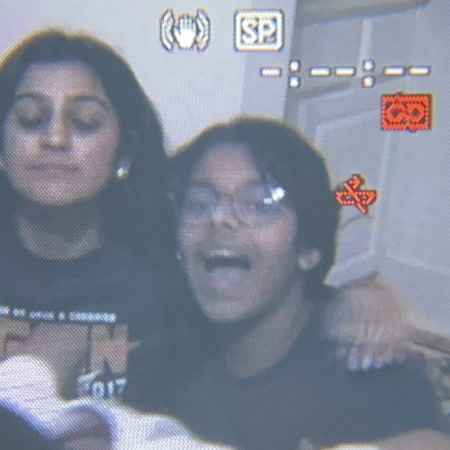

Arseel Ali

About Me
Hello! I am Arseel Ali. I am 14 years old and have been makeing websited since the age of 10! I love technology inclusing things like server managment, programming, the hardware aspect and so much more. This is my digital resume. Have a look around and be sure to contact me with any questions or concerns. Bye for now!
Education
- Stephen F. Austin High School - Fort Bend ISD (2024-2028)
Work Experience
Skills
- Organization - ⭐⭐⭐⭐
- Microsoft Office Suite - ⭐⭐⭐⭐
- Microsoft Windows 7/8/8.1/10/11 - ⭐⭐⭐⭐
- Microsoft Windows Server Edition - ⭐⭐⭐
- HTML 5 - ⭐⭐⭐⭐⭐
- CSS 3 - ⭐⭐⭐⭐⭐
- JavaScript (ECMAScript 2023) - ⭐⭐
Certifications
- Udemy - The Complete 2024 Web Development Bootcamp Completion Certification
- Emergency Medical Technician (EMT) Certified